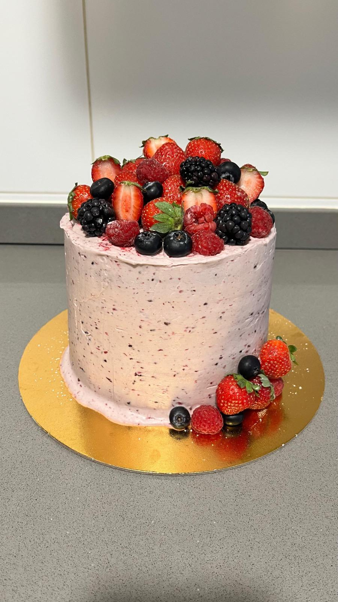

Repostería artesanal por encargo
Tartas personalizadas en Valencia
Diseñamos tartas a medida para celebraciones familiares, infantiles y eventos especiales en Valencia y alrededores.
Consultar disponibilidadDiseño, sabor y detalle
Tartas únicas para tu celebración
En Sugar Victory Cake preparamos tartas personalizadas en Valencia según la temática, el número de raciones, los colores y los sabores que necesitas. Trabajamos cada pedido de forma artesanal para que la tarta encaje con el momento que vas a celebrar.
Podemos ayudarte con tartas infantiles, tartas elegantes, diseños de personajes, tartas con flores, drip cakes, decoraciones con topper y propuestas coordinadas con cupcakes o mesa dulce.
Para pedir presupuesto
- Fecha del evento y zona de entrega o recogida.
- Número aproximado de raciones.
- Idea, temática, colores o imagen de referencia.
- Sabor de bizcocho y relleno preferido.

Zona de servicio
Tartas por encargo en Valencia y alrededores
Atendemos pedidos en Valencia, Catarroja, Albal, Massanassa, Benetússer, Alfafar y localidades cercanas.
- Tartas personalizadas para cumpleaños, comuniones, bautizos y aniversarios.
- Presupuesto directo por WhatsApp con orientación de raciones y formato.
- Decoración adaptada a la temática de tu fiesta o evento.
¿Tienes una idea para tu tarta?
Envíanos fecha, raciones y referencias para preparar una propuesta.
También hacemos